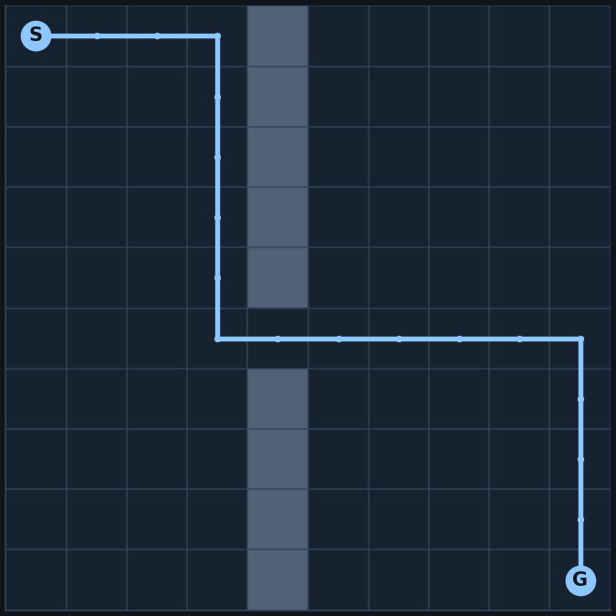
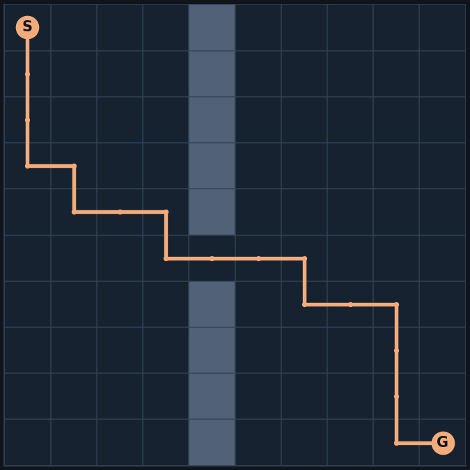
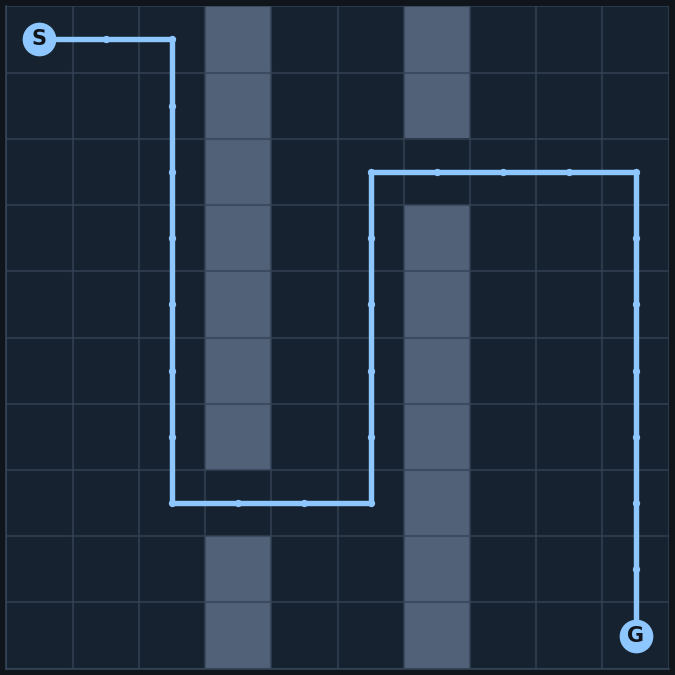
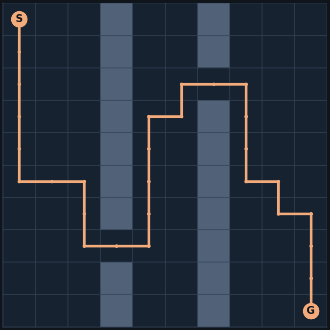

A* search

Two approaches to the same grid-world task. A* plans with a known map, while tabular Q-learning learns a policy through trial and error.
The four routes were generated by the original Python implementations. Both maps use four-direction moves. Q-learning uses seed 42 and runs 1,000 training episodes per map before greedy evaluation.




Prioritises each cell by the cost to reach it plus the Manhattan distance to the goal. Parent pointers reconstruct the route when the goal is reached.
Stores four action values per free cell. During training it sometimes explores a random action, then updates the chosen value using the reward and the best next action. Evaluation sets exploration to zero.
Extract the archive, then run python astar.py and python qlearning.py for the console results. Install Pygame to replay the routes with python simulation.py.
import heapq
# calculate the Manhattan distance between two points.
def manhattan(position, goal):
row, col = position
goal_row, goal_col = goal
return abs(row - goal_row) + abs(col - goal_col)
# Reconstruct the path from the start to the goal using the came_from dictionary.
def reconstruct_path(came_from, current_cell):
path = [current_cell]
while current_cell in came_from:
current_cell = came_from[current_cell]
path.append(current_cell)
path.reverse()
return path
# A* algorithm implementation to find the shortest path in a grid.
def astar(grid, start, goal):
frontier = []
heapq.heappush(frontier, (manhattan(start, goal), start))
g_score = {start: 0}
came_from = {}
directions = [
(-1, 0), # Up
(1, 0), # Down
(0, -1), # Left
(0, 1), # Right
]
while frontier:
_, current_cell = heapq.heappop(frontier)
if current_cell == goal:
return reconstruct_path(came_from, current_cell)
row, col = current_cell
for row_change, col_change in directions:
new_row = row + row_change
new_col = col + col_change
neighbour = (new_row, new_col)
if (
0 <= new_row < len(grid)
and 0 <= new_col < len(grid[new_row])
and grid[new_row][new_col] == 0
):
tentative_g = g_score[current_cell] + 1
if neighbour not in g_score or tentative_g < g_score[neighbour]:
came_from[neighbour] = current_cell
g_score[neighbour] = tentative_g
f_score = tentative_g + manhattan(neighbour, goal)
heapq.heappush(frontier, (f_score, neighbour))
return None
# Main function to test the A* algorithm.
if __name__ == "__main__":
from time import perf_counter
from environment import detour_grid, goal, grid, start
for map_name, map_grid in (("One-wall map", grid), ("Two-wall detour", detour_grid)):
planning_start = perf_counter()
path = astar(map_grid, start, goal)
planning_seconds = perf_counter() - planning_start
print(f"\nMap: {map_name}")
print(f"A* planning time: {planning_seconds * 1_000_000:.1f} µs")
print("A* path:", path)
if path is None:
print("No path exists.")
else:
print("Number of moves:", len(path) - 1)
import random
from time import perf_counter
from environment import detour_grid, get_reward, goal, grid, move, start
# Define the possible actions: up, down, left, right.
actions = [
(-1, 0), # Up
(1, 0), # Down
(0, -1), # Left
(0, 1), # Right
]
# Choose an action based on the Q-table and epsilon-greedy policy.
def choose_action(q_table, position, epsilon):
if random.random() < epsilon:
return random.randrange(len(actions))
values = q_table[position]
best_value = max(values)
best_actions = []
for index, value in enumerate(values):
if value == best_value:
best_actions.append(index)
return random.choice(best_actions)
# Run the Q-learning algorithm on the given map grid.
def run_q_learning(seed=42, map_grid=grid):
random.seed(seed)
q_table = {}
for row in range(len(map_grid)):
for col in range(len(map_grid[row])):
if map_grid[row][col] == 0:
q_table[(row, col)] = [0.0, 0.0, 0.0, 0.0]
alpha = 0.1
gamma = 0.9
epsilon = 0.2
episodes = 1000
max_steps = 200
# Time the training loop.
training_start = perf_counter()
for episode in range(episodes):
position = start
steps = 0
while position != goal and steps < max_steps:
action_index = choose_action(q_table, position, epsilon)
next_position = move(map_grid, position, actions[action_index])
reward = get_reward(next_position, goal)
old_value = q_table[position][action_index]
if next_position == goal:
target = reward
else:
target = reward + gamma * max(q_table[next_position])
q_table[position][action_index] = (
old_value + alpha * (target - old_value)
)
position = next_position
steps += 1
training_seconds = perf_counter() - training_start
# Time evaluation with exploration and Q-value updates off.
position = start
evaluation_path = [position]
evaluation_steps = 0
evaluation_start = perf_counter()
while position != goal and evaluation_steps < max_steps:
action_index = choose_action(q_table, position, 0.0)
position = move(map_grid, position, actions[action_index])
evaluation_path.append(position)
evaluation_steps += 1
evaluation_seconds = perf_counter() - evaluation_start
print("Training seed:", seed)
print(f"Training time: {training_seconds * 1_000:.3f} ms")
print(f"Evaluation time: {evaluation_seconds * 1_000_000:.1f} µs")
print("Evaluation reached goal:", position == goal)
print("Evaluation steps:", evaluation_steps)
print("Evaluation path:", evaluation_path)
return evaluation_path
# Main function to run Q-learning on both maps.
if __name__ == "__main__":
for map_name, map_grid in (("One-wall map", grid), ("Two-wall detour", detour_grid)):
print(f"\nMap: {map_name}")
run_q_learning(seed=42, map_grid=map_grid)